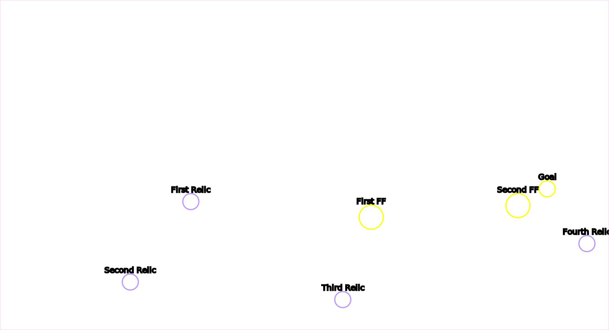

Wings of Liberty Campaign Locations
Table of Contents
- Mar Sara
- Colonist
- Artifact
Contibutors
- Phaneros (aka "Phanerus") -- General code / tooling / HTML
- Neocerber -- Map pictures
- Mati -- Proof of concept
Liberation Day

- Bonus 6 statues
- Progression Special Delivery
- Progression Victory
The Outlaws

- Bonus Resource Pickups
- Bonus Rescue Rebel Base
- Progression Nice job takin' out that bunker, Jimmy
- Progression Victory
Zero Hour

- Bonus Rescue groups 1~3
- Challenge 4x kill a hatchery
- Progression Victory
Tips
- The enemy rebuilds their hatcheries, and killing morphing hatcheries counts towards the check
Evacuation
- Secret Secret resource stash
- Note: This is reachable right at the start of the mission
- Bonus 3x Zerg Crysalis
- Progression Reach the colonist base
- Progression Victory
- Challenge Don't lose any colonist or truck
Outbreak

- Bonus Larry the Left infestor
- Bonus Reggie the Right infestor
- Progression Victory
Safe Haven

- Bonus First Terror Fleet
- Bonus Second Terror Fleet
- Bonus Third Terror Fleet
- Progression North Nexus
- Progression East Nexus
- Progression South Nexus
- Progression Victory
Haven's Fall

- Progression North Hive
- Progression East Hive
- Progression South Hive
- Progression Victory
- Challenge Northeast Colony Base
- Challenge East Colony Base
- Challenge Middle Colony Base
- Challenge Southeast Colony Base
- Challenge Southwest Colony Base
Smash and Grab
- Bonus First Relic
- Bonus Second Relic
- Bonus Third Relic
- Bonus Fourth Relic
- Progression First Forcefield Area Busted
- Progression Second Forcefield Area Busted
- Progression Victory
Tips
- All the artifacts can be acquired without units, by loading SCVs into your command center and flying it around
The Dig

- Bonus Left Relic
- Bonus Right Ground Relic
- Bonus Right Cliff Relic
- Progression Moebius Base
- Progression Victory
Tips
- The top bases will not reinforce the right base; you can fly a building over the cliffs and snipe probes and pylons and the top base will not rebuild it
- There are five "special pylons" (annotated above) in 3 groups. Kill all the Pylons in a group, and the Warp Prism / air wave won't spawn from that direction